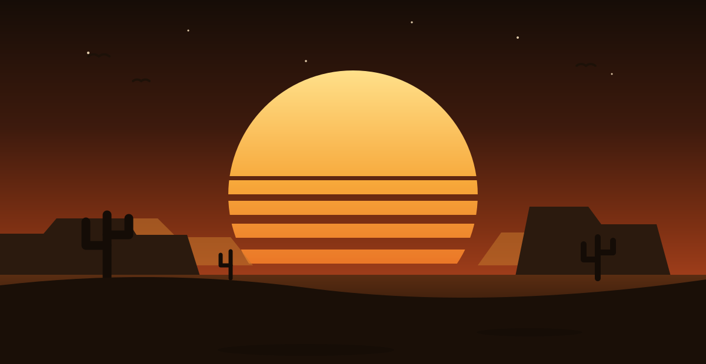

★ BY ORDER OF THE MAINTAINER ★
WANTED
— Dead Simple or Alive —
"THE BROKEN BUILD"
- Last seen
- Failing on main
- Crimes
- Flaky steps, bad YAML
- Reward
- One green check ✓
CAPTURE ALIVE IF POSSIBLE — TEST IT HERE FIRST

Open range for code
Howdy, partner. This here's a no-fences testing ground for GitHub Actions, container builds, and deployment trails — where a busted pipeline costs you nothin' but daylight.
$ tree -L 2 ~/sandbox
.
├── .github/workflows/ — the posse
│ ├── static.yml
│ ├── deploy.yml
│ └── arm.yml
├── docker/ — the chuckwagon
├── .devcontainer/ — the bunkhouse
└── index.html — this saloon
$ ▊
Why this outpost stands
★ BY ORDER OF THE MAINTAINER ★
— Dead Simple or Alive —
"THE BROKEN BUILD"
CAPTURE ALIVE IF POSSIBLE — TEST IT HERE FIRST
Small spread.
Wide open range.
Sandbox is a livin' proving ground for ideas that ain't ready for the big herd yet. CI/CD experiments, container recipes, and deployment prototypes all get corralled in one place where breakin' things is the whole point.
Every corner of this here spread is stocked for a different stretch of the developer trail.
Workflow dispatches, event triggers, runner checks, and deployment automation ridin' on command.
.github/workflows/
Lean Docker recipes for testin' image builds, registries, and how a container behaves on the range.
docker/
A reproducible Dev Container with GitHub Copilot saddled and ready before you set foot inside.
.devcontainer/
Round up the automation
Each workflow shows off a different trigger, runner, or destination down the line.
push → main
→
02
Azure Deploy
Brands a container and drives it to the registry
PR label
→
03
Docker
Runs a containerized action from the chuckwagon
manual
→
04
ARM
Checks what horse the runner rode in on
push / PR
→
05—07
Trail Demos
Inputs, scripts, and dispatch experiments
manual
→
Rustle up your own copy
No permits, no paperwork, no trail fees. Pull it down, open it wherever you hang your hat, and start experimentin'.
Open the repository# Round up the repository
git clone https://github.com/tdupoiron/sandbox.git
cd sandbox